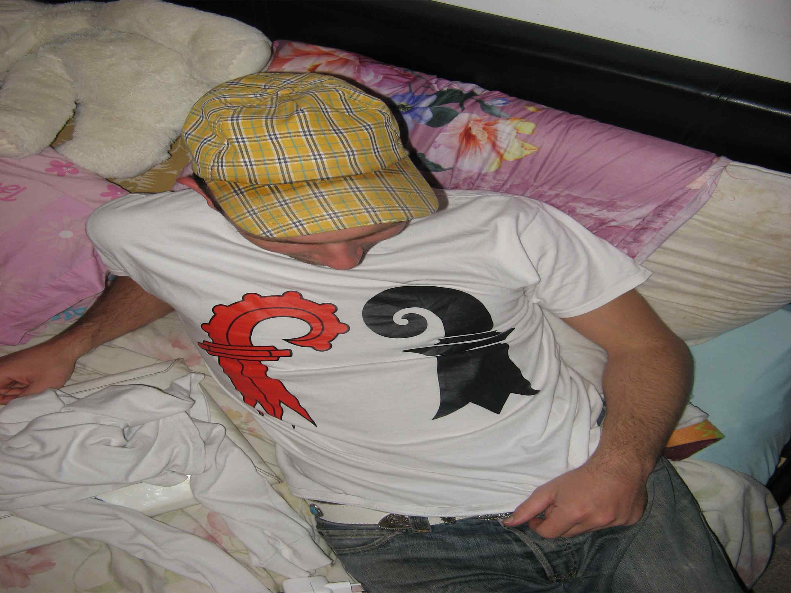
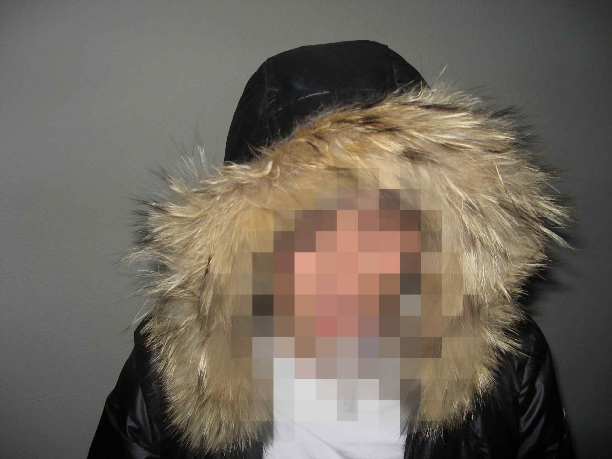

video edit, visual effects and sound design for process documentary directed by selina seibel.
visual essay is an ongoing personal series dedicated to finding new workflows and ways of working with images.
fashion editorial shot on vhs and edited in davinci resolve and touchdesigner, creative direction by selina seibel
globe animation created for AO - africa only
my name is jonas i am a video artist based in basel, switzerland. I am interested in and work with video editing, visual effects and 3D animation, using davinci resolve, blender and touchdesigner.

contact@creonas.com